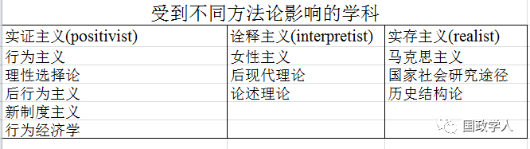
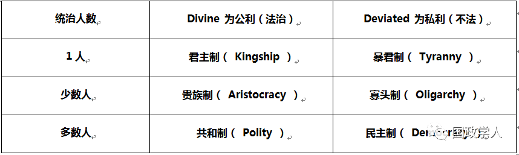

收录于合集

一、实证主义
认为世界是独立于人类的知识之外。
自然科学与社会科学可以类比；只要透过科学方法就可以对社会现象找出一套规律的关系。
产生因果关系的论述。
可以将经验性问题 (empirical questions) 与规范性问题 (normative questions) 予以分离。 在研究上，价值中立是可能的。
二、诠释主义
世界并不独立在知识之外，世界是经由社会观念或论述建构而成。
唯有在论述及传统之内，才能对现在有所理解。
客观的分析不可能，知识本身就承载了某些理论或论述，会发生双重诠释 (double hermeneutic) 问题。
三、实存主义
与实证主义一样，认为世界独立在人类的知识之外。
也与实证主义一样，认为社会现象 / 结构的确存在因果作用力，所以可以建立因果论述。
但是，并非所有的社会现象及社会现象之间的关系，都可以直接被观察。 深层结构是无法被观察到的，但人类又深受其影响。
|
|
—|—|—

一、政治学的研究焦点
** 良善的政治（** good ）
****善 (good) 观点的改变：道德的政治；有效率；经济成长；民主政治 …
** 权力（** power ）
Machiavelli Niccolo 把焦点集中在权力现象，政治独立于道德之外，开启近代以来政治学研究的基础。
H. Lasswell 分析权力即研究「 Who get what, when and how ？」。 政治的过程乃是权力的形成、分配，与运用。
** 政治制度（** institution ）
Aristotle 对希腊城邦的类型学研究。
- 民主 vs 寡头 vs 独裁；

- 总统制 vs 内阁制； - 城邦、封建制度、帝国、共和国、现代国家；
- 多元民主 vs 共识民主；
- 民主政体 vs 威权政体；
- 选举制度；半总统制的运作。
** 政治行为** (behavior)
****具体政治行为的观察与讨论，包括民众的政治参与、精英互动策略，以及系统与个体之间的互动关系。
** 国家** (state)
****工业革命、资本主义兴起后的产物，近代以前是无法想像的。 对领土内具有最高的与最后的制裁权，资源整合与分配的能力达到前所未有的高度。
** 组织与官僚（** organization or bureaucracy ）
Max Weber 首先注意到组织的力量，把研究焦点放在近代国家成形后的行政官僚体系所展现出来的效能。
**
**
**
**
二、政治学的研究途径
** 研究途径（** approaches ） ：可以引导研究者朝向政治学研究的各种不同方式，内容包括试图提出他们对于「政治学的核心主题」为何的答案。 也包括取得证据的方式、如何确保理论研究的性质，以及提出有关政治本质与动能过程的各种基本假定。
** 规范政治理论（** normative political theory ）
规范政治理论涉及在政治关系与实践的领域中，有关道德概念的发现与应用。 1950-1960 经历一个衰败时期， 1970 年代又重新回到学术舞台。
最大的挑战在于此途径对应然（ ought to be ）问题的讨论。某些人质疑这种辩论的价值，而且认为这只是漫无章法地以界定为真的方式，制造出套套逻辑的命题；另有些人质疑人类行为者是否真正具有道德抉择的能力。政治理论学者积极回应挑战，强烈地主张规范理论可以提供一个严谨且发展完整的方式，说明人类在政治生活中的各种选项 。
当代研究主题： John Rawls 的「正义论」；以及「社群主义」的讨论。
制度研究途径（ Institutionalism)
政治制度研究指涉政治系统的规则、程序与形式化组织，以及其对政治实际活动的影响。长期而言，法律、哲学与历史研究是制度研究得以在政治学中成为一个自主研究领域的主要根源，但其遭受了具有方法上的弱点、反理论性、对自由民主体制过分理想化等批判。
1970 年代末期，许多研究者重新定义了制度的意义，并重新重视国家与重要制度在政治发展中的角色 （bring the state back in），开展了当今「新制度主义」 （New-institutionalism ） 的研究轴线。
三种新制度主义 —
理性选择制度论： 认为制度是由具有清晰效用极大化意图的个人所构成的，因此制度也会有理性算计和表达偏好的行为，但是各机关为了防止个人自私行为危及组织目标的实现，所以有必要制定共通的规则，来提供某种形式的社会制裁，以降低私人不合作行为所带来的社会成本。
社会学制度论： ****受到文化论与社会学中组织理论的影响，认为制度是人类生活中受到文化、思想、价值等影响而自然形成的一套规范，用以人的行为与人之间的互动关系，包括有形与无形的规范。而人从一出生就处在制度之中，受到制度的影响非常大，个人的行为会依照该套规范行动，使得个人能符合社会的期望，与他人的互动也能合乎时宜，因此制度形塑了个人的行为，当旧制度无法满足社会上普遍流行的文化、价值、思想、观念时，制度就会面临变迁，更强调必须将个人行为置于一较大的参考架构下，而文化、社会结构、组织认同、工业部门是界定利益的重要因素，尝试将人类行为纳入到总体层次的制度要素去理解，组织权力的正当性来自组织成员的授与，其间有赖一套为大家所接受的游戏规则、文化价值和制度规范。
历史制度论（政治学制度论） ：从比较的 — 历史的观点来研究制度的影响，认为虽然制度并不是决定政策结果的唯一要素，但制度却限制和反映制度的运作情形，国家的机器、政治的体制和中介的机构都成为制度研究的对象，亦认为民主的政治制度应放在其所相依相偎的社会、经济和政治网络中加以了解，再进一步探讨其政策和经济表现的影响
当代主要研究： 政治发展；民主化；比较制度研究 …
** _
_**
** _
_**
** 行为主义（** Behaviorism ）
美国政治学研究占有主流的位置，主要核心在解释个人与整体层次的政治行为。 将研究焦点放在「个体行为」上，并且关心「因果关系」与「 可否证性理论 」的推衍。
在1950-60年代严厉批评制度研究与规范理论而建立其地位。行为主义者认为制度仅具有描述性而欠缺严谨的分析，制度的规则与管制显示人们应该怎么做事，但实际上却可能不是如此，政治学者更应该重视实际可以观察到的行为；另外，对于行为主义者而言，价值与事实之间的分界也要重视，规范政治理论仅能关心价值问题，充其量只能成为意见的陈述或是表达，无法提供证据解决争议性问题。
核心观点：
· 以 「 行为 」 作为研究焦点
· 重视观察证据 （ 事实 ） 与价值中立
· 理论化倾向
· 科学的研究程序
** _
_**
** _
_**
** 后行为主义的修正（** Post-behaviorism ）
当代主要研究：选举研究；政治文化或态度；比较研究；调查研究与方法论 …
** _
_**
** _
_**
** 理性选择论（** rational choice ）
基本假定是政治行为以理解为自利个体的行为选择结果，具有强烈的演绎性质与形式化特征。理性选择的研究者具有极大的理论野心，试图说明政治学所有领域的相关议题，从选举竞争到官僚行为，乃致于国际政治的研究。
理性选择论遭受许多批评，最重要的或许是人类本质所具有的心理复杂性与经常出现的非理性成分，使得理性选择论有先天的限制。但因为个人也有致力于其目标的理性决策倾向，故此途径仍有可观发展空间。唯应该积极处理有限资讯、不确定性等问题，并给予非利己与道德动机等某些讨论空间。
当代主要研究：博奕理论、社会选举理论、公共选择理论
女性主义（ feminism ）
大多数的政治理论或政治研究都无法逃脱「无视性别」（ gender-blindness ）的质疑，此正是当代女性主义研究兴起的主要根源。
初期的激进女性主义者所作的是将 性别论转成 政治论，藉由认为、 政治就是转换权力，取得了对成就、优势的定义，所以希望由此转变女性不平等的地位及被限制的角色；在政治上，则是改变被定位为「附属」、「无权」和「被压迫」的地位。
现代女性主义则在经过社会运动、分裂及理论争议后，进入了女性公民资格讨论、重视与国家及政策过程的关系、以及更强调田野调查的发展。
核心概念：
· 男性与女性，以及性别议题
· 解构的策略
· 与实际议题的连结：妇女解放、堕胎、加诸女性的暴力。
· 当代主要研究：性别理论；公共领域与私人领域；
** _
_**
** _
_**
** 论述理论（** discourse theory ）
此途径将社会意义的组织结构化，视为核心的政治行动，此与政治学研究中的后现代主义 （ postmodernism ） 产生重要关联，其作法在于检视意义体系，或论述如何塑造人们理解其主场及政治活动的方式。 主张 研究焦论应 集中在论述的产生、功能与变迁，因为论述提供一个有力的工具去理解复杂社会中政治活动的动态发展与特征。 主要的学术脉络来自诠释学、现象学、结构主义和解构等诠释性学科。
核心概念
· 连结 （ articulation ） ：论述的关系理论
· 论述与政治分析：论述具有历史的偶然性，并且是政治性建构
· 对立性：敌人 （ enemy ） 或他者 （ other ） 的产生与政治边界
· 主体性与行动：自我认同所形成的主体，同时是行动的来源
· 霸权：透过政治方案来进行霸权斗争与建立
· 当代主要研究：民族主义；性别政治；差异政治；生态主义与环保论述
三、政治学的研究方法
** 用什么方法形成理论：归纳与演绎**
归纳法 ****（ inductive method ） ****：经由经验观察，进而找寻模式与通则化规则来得出结论。 ****从个别出发以达到一般性，从一系列特定的观察中，发现一种模式，足以代表既定事件的秩序。
演绎法 ****（ deductive method ） ****：强调透过概念分析与思考过程从第一原则导出结论的价值。 ****从整体出发来建立独特性，是从逻辑或理论上预期的模式中，为了测试是否确定存在而进行观察。
** _
_**
** _
_**
** 如何选择研究对象：**
个体与总体 ****： 主观与客观资料的使用；测量的尺度与方式
个案研究 ****（ case study ） ****： ****运用现存理论来说明单一个案的诠释性个案研究；引发假设的个案研究；设计用来质疑与检验理论的个案研究；用来肯定理论的个案研究；偏离性的个案研究。
比较分析 ****（ comparative analysis ） ****： ****采用比较研究的主要理由，在于它反映了社会科学研究的基本性质，因为社会科学不太可能采取实验研究。 ****另外，采取比较研究可以部分地避免分析时的「种族中心」 ****（ ethnocentrism ） ****谬误，同时可以 ****帮助研究者形成概念与检验理论的有效性。
** _
_**
** _
_**
** 资料搜集方式：质化研究与量化研究**
质化研究 法 ****（ qualitative method ） ****： ****包涵参与观察、深 ****度 ****访谈 ****、焦点团体 ****等方法的总称。 ****这些方法源于人类学 ( 田野记录 ) 与社会学 ****（ ****导引式交谈、开放式问题、非正式性的探测 ****） ****， ****适用于 ****目的在探 ****索主观经验与意义的研究。 ****缺点则是这种方式无法断定研究的信度、 ****效度 ****，与客观性的问题。 ****题。 ************
量化研究 法 ****（ quantitative method ） ****： ****以统计学的数学模式为基础，所以与数量具有相当的关联性 ****，重要特征为 ****强调代表性、抽样方法、测量、 ****因果关系等操作与分析过程。 ****主要批评来自资料的误差、无法保证的访问品质、封闭性的问项 ****，与谬误的因果关系。
** _
_**
** _
_**
** 分析层次：结构与行动者（** structure/agency or actor ）
政治学研究的解释角度，应该以个人的自主行动来说明，还是由个人所处其无法掌控的脉络或结构下的运作结果。
筛选：早安老师
编辑：米金金
声 明
国政学人微信公众平台系非盈利学术平台。建立初衷是方便广大学人进行学术研究，促进学术的传播和交流，不做任何商业用途。如有任何权利问题，请直接与我们联系。
您可能还会喜欢：